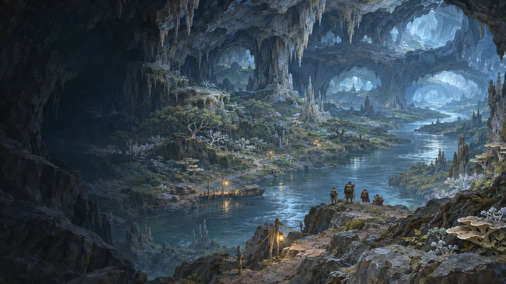
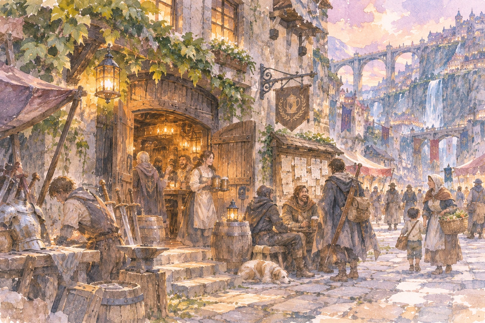

本文へ移動
✦
RUOSUEN
ルオスエン
物語を見る
世界を知る
街を歩く
メニュー
物語を見る
世界を知る
街を歩く
次の冒険
人物を共有する
キャラクターを考える
地の底に、
空がある。
自由迷宮都市ルオスエン。
物語を始める
→
川の港と、
空の港。
そのあいだに、人が暮らす街がある。
地下から届くものを、
地上で待つ人がいる。

道を描く者。船を造る者。
地下へ塔を伸ばした者。
迷宮の最下層に辿り着けば、
願いが叶うという。
同じ入口から、
違う願いで。
富を求める者。失われた道を探す者。

ここで出会い、地下へ向かい、
また帰る。
君は、この街から
何を探しに行く？
自由迷宮都市ルオスエン。
レウナの世界を知る
→
地の底の空
スクロールして、その先へ ↓
前の場面
次の場面
この街の、その先へ。
世界を知り、街を歩き、君の人物を考える。
気になるところから訪ねる
レウナの世界
マナ、魔石、大転流。人々が地下へ向かう理由
ルオスエンを歩く
六つの施設と、街角の風景
次の冒険の始まり
次回の導入は準備中です
この世界で冒険する
人物像から、四人で歩き出す準備へ
キャラクターを共有する
考えた人物を、DMへ
ページの案内
ルオスエンの入口
世界の案内と街歩きを開くには、JavaScriptを有効にしてください。上の物語はそのまま読めます。